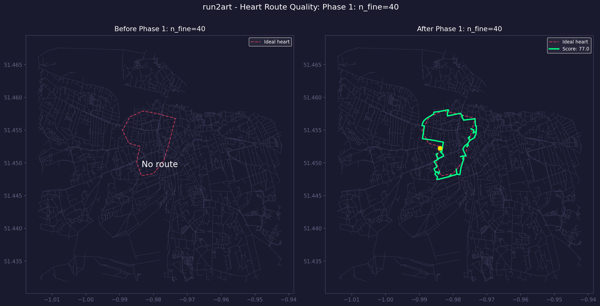
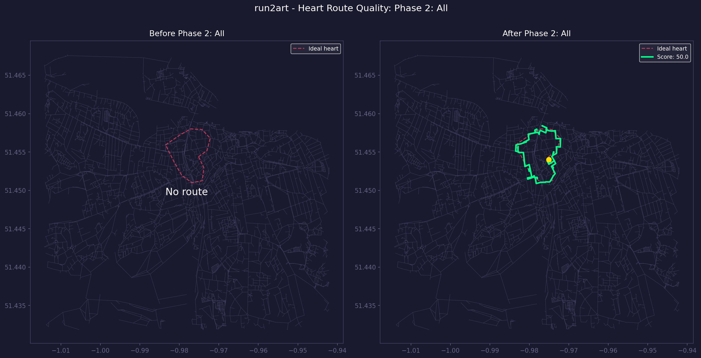

| Phase | Description | Total Score | Hausdorff | Coverage | Turning | Delta | Time |
|---|---|---|---|---|---|---|---|
| P0 | Baseline (v8.1) | 63.6 | 111.5 | 31.0 | 87.3 | --- | 122.6s |
| P1 | n_fine=40 | 77.0 | 111.5 | 31.0 | 87.3 | +13.4 | 99.6s |
| P2 | All | 50.0 | 62.8 | 20.7 | 105.4 | -13.6 | 980.5s |
 Interactive Map
Interactive Map

Interactive Map
Interactive Map